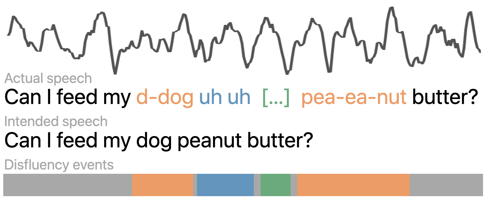
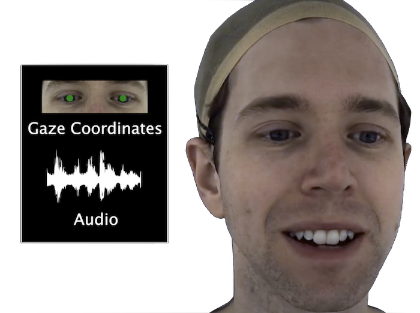
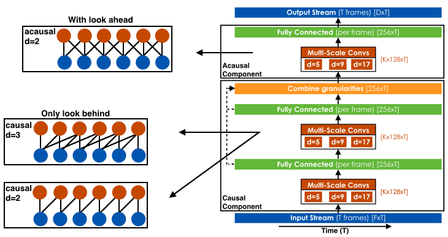
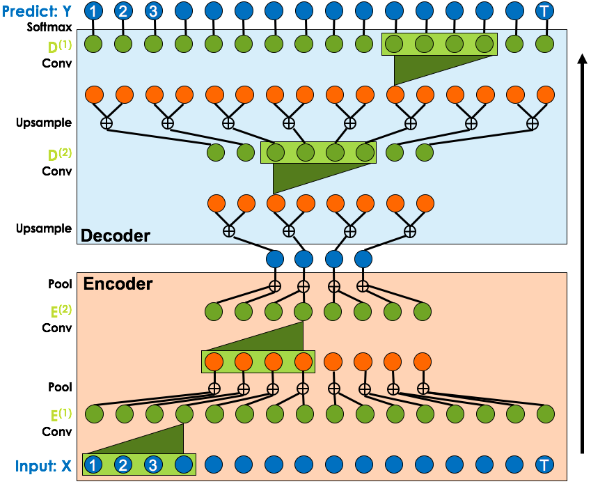
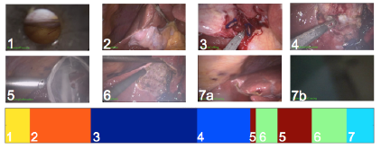
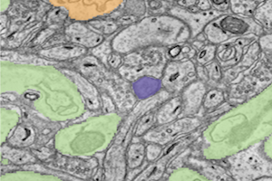

|
Colin Lea
|
 I am a researcher at Apple where I work on machine learning for
I am a researcher at Apple where I work on machine learning for Apple
|  |
SEP-28k: A Dataset for Stuttering Event Detection From Podcasts with People Who Stutter
Colin Lea*, Vikram Mitra*, Aparna Joshi, Sachin Kajarekar, Jeffrey Bigham
ICASSP 2021
The dataset will be available before the conference. |
Facebook Reality Labs
|  |
Audio- and Gaze-driven Facial Animation of Codec Avatars
[Video]
Alex Richard*, Colin Lea*, Shugao Ma, Juergen Gall, Fernando de la Torre, Yaser Sheikh arxiv 2020 |
|  |
Tech Note: Enhancing Oculus Lipsync with Deep Learning Sam Johnson*, Colin Lea*, and Ronit Kassis Oculus Developers Blog 2018 |
Action Segmentation Papers
|  |
Temporal Convolutional Networks for Action Segmentation and Detection Colin Lea, Michael Flynn, Rene Vidal, Austin Reiter, Greg Hager CVPR 2017 [code] An abbreviated version was presented at the BNMW Workshop at ECCV 2016 |
 |
Segmental Spatiotemporal CNNs for Fine-grained Action Segmentation Colin Lea, Austin Reiter, Rene Vidal, Greg Hager ECCV 2016 |
 |
Sensor Substitution for Video-based Action Recognition Christian Rupprecht*, Colin Lea*, Federico Tombari, Nassir Navab, Greg Hager IROS 2016 |
 |
Learning Convolutional Action Primitives for Fine-grained Action Recognition Colin Lea, Rene Vidal, Greg Hager ICRA 2016 |
Surgical Data Modeling, Healthcare, & Related Applications
|  |
Surgical Phase Recognition: from Instrumented ORs to Hospitals Around the World Colin Lea, Joon Hyuck Choi, Austin Reiter, Greg Hager MICCAI 2016: M2CAI Workshop *Best Workshop Paper Award* |
 |
Recognizing Surgical Activities with Recurrent Neural Networks Robert DiPietro, Colin Lea, Anand Malpani, Narges Ahmidi, S. Swaroop Vedula, Gyusung I. Lee, Mija R. Lee, and Gregory D. Hager MICCAI 2016 |
|  |
SANTIAGO: Spine Association for Neuron Topology Improvement and Graph Optimization William Gray Roncal, Colin Lea, Akira Baruah, Greg Hager arXiv 2016 |
 |
System Events: Readily Accessible Features for Surgical Phase Detection Anand Malpani, Colin Lea, Grace Chen, Greg Hager IPCAI 2016 |
 |
An Improved Model for Segmentation and Recognition of Fine Grained Activities with Application to Surgical Training Tasks
Colin Lea, Greg Hager, Rene Vidal WACV 2015 |
 |
Transition State Clustering: Unsupervised Surgical Trajectory Segmentation For Robot Learning
Sanjay Krishnan, Animesh Garg, Sachin Patil, Colin Lea, Greg Hager, Pieter Abbeel, Ken Goldberg ISRR 2015 |
 |
3D Sensing Algorithms Towards Building an Intelligent Intensive Care Unit Colin Lea, James Fackler, Greg Hager, Russell Taylor and Suchi Saria AMIA Clinical Research Informatics 2013 |
 |
Towards Automated Activity Recognition in an Intensive Care Unit Colin Lea, James Fackler, Greg Hager and Russell Taylor MICCAI 2012: Workshop on Modeling and Monitoring of Computer Assisted Interventions (M2CAI) |
Robotics
 |
A Framework for End-User Instruction of a Robot Assistant for Manufacturing
Kelleher Guerin, Colin Lea, Chris Paxton, Greg Hager ICRA 2015 Video CoSTAR: Collaborative System for Task Automation and Recognition |
 |
Comparative evaluation of range sensing technologies for underground void modeling Uland Wong, Aaron Morris, Colin Lea, James Lee, Chuck Whittaker, Ben Garney, and Red Whittaker IROS 2011 Poster CMU Summer Scholars presentation |
Journal Club Presentations
|
Summer 2014
Hidden Part Models for Human Action Recognition: Probabilistic vs. Max-Margin. Y Wang, G Mori. PAMI 2011. From Stochastic Grammar to Bayes Network: Probabilistic Parsing of Complex Activity. N Vo, A Bobick. CVPR 2014. Hidden Semi-Markov Models K Murphy. 2002. |
|
Spring 2013
Mining Actonlet Ensemble for Acton Recogniton with Depth Cameras. J Wang, Z Liu, Y Wu, J Yuan. CVPR 2012. Nonparametric Discovery of Activity Patterns from Video Collections. M Hughes, E Sudderth. CVPR 2012. Learning Human Actvites and Object Affordances from RGB-D Videos. H Koppula, R Gupta, A Saxena. IJRR 2013. Hallucinating Humans as the Hidden Context for Labeling 3D Scenes. Y Jian, H Koppula, A Saxena. CVPR 2013. |
|
Fall 2012
A User-Centered and Workflow-Aware Unified Display for the Operating Room. R Stauder, V Belagiannis, L Schwarz, A Bigdelou, E Sohngen, S Ilic, N Navav. MICCAI: M2CAI Workshop 2012. |
|
Spring 2012
Real-time Identification and Localization of Body Parts from Depth Images. C Plagemann, V Ganapathi, D Koller, S Thrun. ICRA 2010. |
Undergraduate Projects
 |
Efficient Hierarchical Markov Random Fields for Object Detection on a Mobile Robot (2011) Colin Lea and Jason Corso |
 |
RGBD-based Object Recognition and Pose Estimation IROS Solutions In Perception Challenge 2011 Colin Lea, Kevin Yam, Dan Molik, Lai Lee, Julian Ryde, Nick Hillier, Jason Corso Challenge Poster Senior Design Project Report |
 |
Big Blue: An Entry into the Intelligent Ground Vehicle Competition
[2011]
[2010]
[2009]
UB Robotics Club Poster UB Undergraduate Research Symposium |
 |
Haptics-Augmented User Interaction (Spring 2010) Colin Lea, Venkat Krovi University at Buffalo Celebration of Academic Excellence H3D Tutorials |
 |
Teleoperation and Interaction With a Mobile Robot (Winter 2009) Colin Lea and Venkat Krovi |
Looking for older projects? Go here.